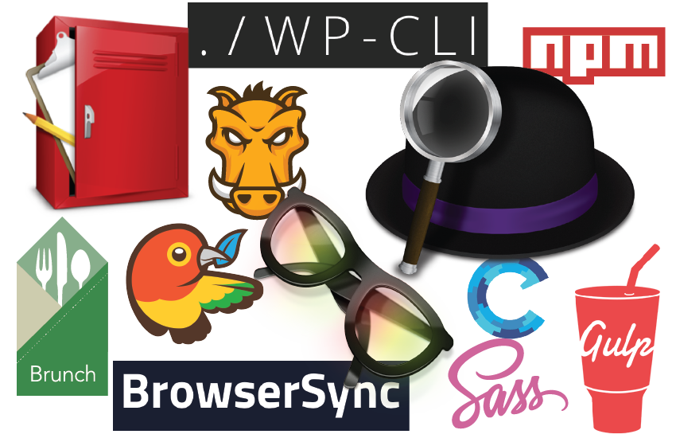

As a web developer, I can't stand doing things inefficiently. There are so many development, design, or just everyday tasks that we do throughout the day, that can be done more efficiently. There's even a chance that the task can be automated to take most of the leg work out out of it. That's why I like web development tools so much. If you're like me, you like getting things done so you can spend more time with friends and family, or just browsing reddit and imgur.
Applications
There is an endless amount of applications out there that will help you be more efficient and productive, in fact, Andrew covered some of these a few months back. Not only are these great for web development, but they can help with everyday tasks as well.
ALFRED - Mac Only
Alfred is an amazing application and you can do any number of things with it. In order to unlock its full potential, you have to purchase the Powerpack. Let me tell you, it is well worth it. Once you have the Powerpack, you can download or even create your own "workflows." Another amazing use is the "spell" command. In fact, I used it 8 times while writing this article! A few of my favorites workflows:
- Dev Doctor - Specifically the "caniuse" command which allows you to search caniuse.com. (For when you need to check if something doesn't work in IE)
- Colors - Lets you easily convert colors from one format to another. (i.e. Hex to RGB)
- Hipsum - Grabs dummy text using the hipsum.co API.
- Reddit - Puts the top posts of reddit.com at your fingertips.
Feel free to check out all my personal workflows on Github.
SPECTACLE - Mac Only
Do you ever find yourself struggling to move and organize all your windows? Spectacle can fix that! With Spectacle, you will be able to easily arrange your windows with minimal effort. It's as simple as Command + Option + Right Arrow. Your window is now covering the right half of your screen. BOOM! The shortcuts are easily customizable, and better yet, the project is open source.
FLYCUT - Mac Only
Holy smokes! If you have ever had to enter copy into a website, you know how tedious of a task it can be. Constantly going back and forth between the website and the copy document, copying paragraph by paragraph. That's just silly, don't do that! Flycut basically creates a "clipboard history" for you. This means that you can copy multiple chunks of text, and then paste them one by one with Shift + Command + V. You can even sync your clipboard between computers using Dropbox. Again, Flycut is an open source project
Tools
If you are a web developer, you have probably noticed the plethora of tools that have been sprouting up in the past couple of years. It is amazing to have so many great tools at our disposal, but it can be very difficult deciding what tools are really worth keeping around. I certainly haven't tried them all, but these are a few of my favorite.
Build Tools
If you do a lot of front end development, I'm sure you are familiar with the large number of tedious tasks that constantly need doing when making CSS or JS changes. If you keep up with popular web development tools and trends, there is a high probability that you have heard of one of the many build tools out there, including Grunt, Gulp, and Brunch. Build tools are used to automate tasks, such as compiling Sass, minifying JS files, and compressing images. I have given both Grunt and Gulp a chance at proving themselves. They both have their pros and cons, but since starting at Happy Medium, Grunt has definitely taken the lead after using it on a day-to-day basis. Grunt has a much larger community, which in return, means that more plugins are created for it. If you don't currently use a build tool, I highly suggest giving them all a try and finding out which works best for you; they will completely change your workflow. Build tools with a GUI: CodeKit (Mac) & Prepros (Windows)
BROWSERSYNC
BrowserSync is another great tool for front end development. Again, I'm sure you are familiar with how tedious it can be when working with CSS and JS. For example, you make a change to your stylesheet, save the changes, and then have to go back and refresh your browser window so the changes will appear. There is no need for that - let BrowserSync help you out. A few things you get with BrowserSync:
- File syncing - the browser will automatically update when you make changes to your files
- Remote Inspection - Inspect a browser on any device, remotely
- URL Tunneling - Share your local sites with everyone
- Interaction Sync - Any interactions you perform (click, scroll, etc...), are mirrored between your browsers
BrowserSync has a CLI or you can integrate it into your workflow with Grunt or Gulp. If you combine BrowserSync and Grunt a typical workflow might look something like this.
- Open the terminal, navigate to your project directory, and run
$ grunt bs.This will start the BrowserSync task, which will watch for changes made to your project files. - When you make a change to a Sass file, Grunt will see the change, run that task to compile your Sass files, and then BrowserSync will update your browser accordingly.
WP-CLI
If you are a WordPress developer, WP-CLI is a must have. WP-CLI is, you guessed it, a command line tool for performing WordPress tasks. Commands range from scaffolding a new plugin to flushing the rewrite rules, if it's something you can do in the admin area, it can probably be done with the CLI. If you want to fully harness the power of WP-CLI, you could write a Bash script to help you set up a new project with just a few commands. I've actually been working on my own setup script that you can check it out on Github.
Honorable Mentions
- Sass - CSS preprocessor
- Bower - A package manager for the web
- NPM - Node Package Manager
- Homebrew - The missing package manager for OS X
- Capistrano - Remote server automation and deployment tool
At the end of the day, it doesn't really matter what you use to help you get the job done. Just remember to always keep improving the way you do things and that it's likely you can change the way you do something each day to be more efficient. Have you heard of all these applications and tools before? What applications and tools do you use that help you be more efficient? Have a workflow you think I could use? I'm always looking for new ways to automate and save time. Leave your comments below!